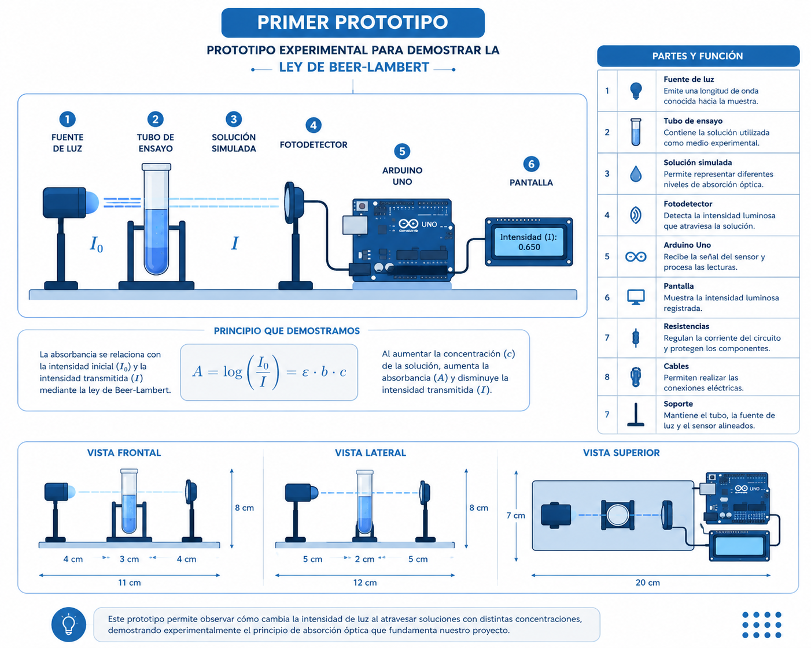
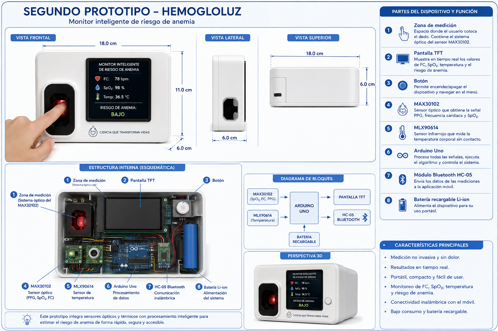
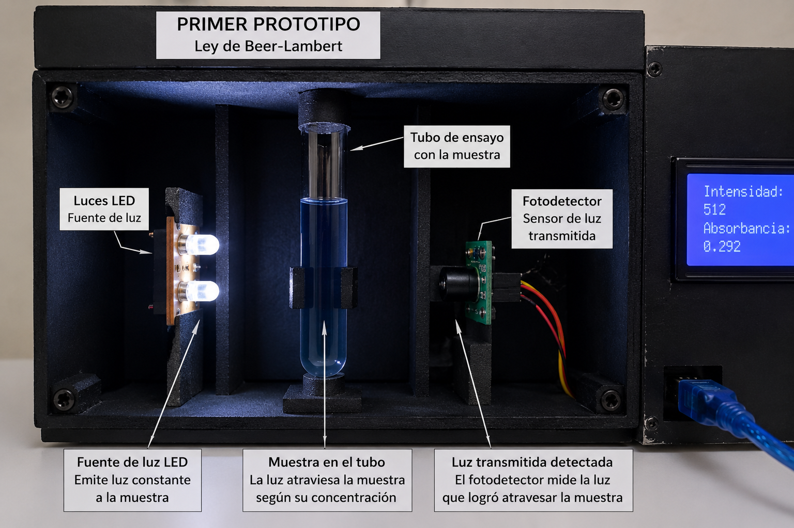
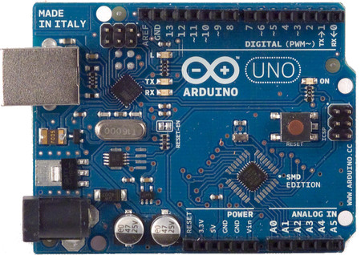
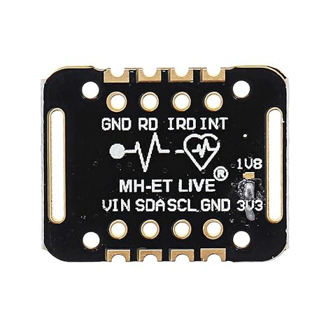
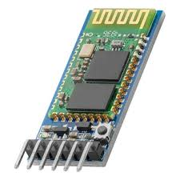
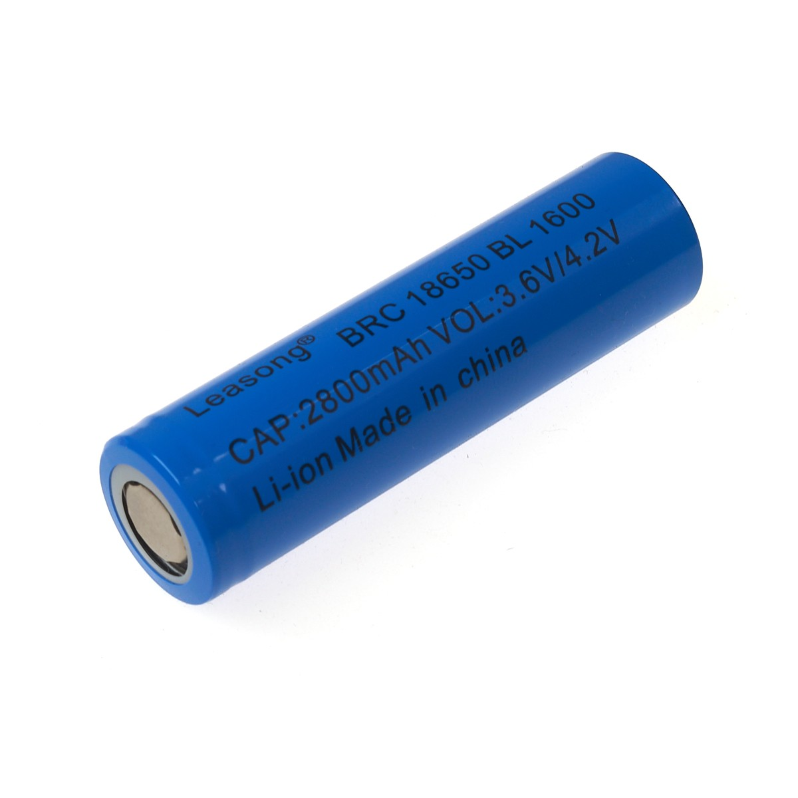

HemogloLuz
una mirada óptica al riesgo de anemia
Sistema portátil basado en Arduino Uno para la estimación experimental y no invasiva del riesgo de anemia mediante señales ópticas y variables fisiológicas.

Segundo prototipo implementado, presentado en el informe como sistema portátil de medición experimental.
¿Qué problema aborda?
Una necesidad local
El informe señala que en Pomabamba, Áncash, el Hospital de Apoyo registró 249 personas con anemia entre enero y julio para el proyecto. La propuesta parte de esa problemática comunitaria.
Una limitación tecnológica
La medición convencional de hemoglobina requiere procedimientos clínicos, muestras de sangre y equipos adecuados. El proyecto estudia una alternativa no invasiva, portátil y accesible.
Una precisión importante
HemogloLuz se plantea como herramienta de investigación y tamizaje experimental. El informe deja claro que no sustituye una prueba de laboratorio ni un diagnóstico médico.
De la luz a una variable cuantificable
Ley de Beer–Lambert
En el primer prototipo se estudió la relación entre concentración, absorción e intensidad luminosa. La ecuación utilizada es:
Al aumentar la concentración de las soluciones, el informe registra una disminución de la intensidad transmitida y un aumento de la absorbancia.
Procesamiento experimental
Para el sistema óptico se define un índice R a partir de las señales roja e infrarroja y sus referencias sin dedo. Luego:
El informe enfatiza que a y b no son constantes universales: requieren calibración con valores de hemoglobina de referencia.
Dos prototipos complementarios



¿Cómo trabaja HemogloLuz?
Adquisición
El MAX30102 aporta señales PPG, frecuencia cardíaca y SpO₂; el MLX90614 registra temperatura; el sistema óptico aporta la señal utilizada en el modelo experimental.
Procesamiento
Arduino Uno recibe las señales, realiza filtrado y promediado y ejecuta las operaciones matemáticas programadas.
Visualización y comunicación
La pantalla TFT muestra las variables y resultados. El módulo HC-05 permite transmitir información a un dispositivo móvil.
Comparación experimental
La Hb estimada se compara con la Hb de referencia ajustada. El informe utiliza error porcentual, MAE, RMSE y análisis de relación lineal.
Los 70 registros del segundo prototipo
Resultados visuales
Clasificación registrada
Estas etiquetas son las consignadas en la tabla del informe y deben interpretarse como parte del conjunto experimental, no como diagnóstico clínico.
Componentes principales
Arduino Uno Rev3

Procesamiento central, filtrado, promediado y operaciones matemáticas del modelo.
MAX30102

PPG, frecuencia cardíaca, SpO₂ y señales ópticas roja e infrarroja.
MLX90614

Medición de temperatura corporal sin contacto.
Pantalla TFT

Visualización de variables y resultados del prototipo.
Bluetooth HC-05

Transmisión de información mediante UART.
Alimentación portátil

Batería Li-ion 18650 y módulo TP4056 para alimentación y recarga.
Condiciones de medición
Seguridad eléctrica
Trabajar con bajos voltajes, verificar conexiones y evitar cortocircuitos o conexiones invertidas.
Protección y aislamiento
La batería debe contar con protección y los componentes deben mantenerse dentro de la carcasa para evitar contactos accidentales.
Medición controlada
Mantener posición similar del dedo, tiempo de adquisición e iluminación estable para reducir variaciones.
Higiene
Limpiar y desinfectar la superficie de contacto antes y después de las pruebas cuando se utilice por diferentes personas.
Protección de sensores
Evitar golpes, humedad y contacto directo con líquidos, especialmente en MAX30102 y MLX90614.
Supervisión
Las pruebas experimentales deben realizarse bajo supervisión de las integrantes responsables y detenerse ante cualquier funcionamiento anormal.
Tabla interactiva de los 70 registros
| N.º | Hb laboratorio | Hb ref. ajustada | HemogloLuz H* | Error (%) | Resultado |
|---|
Conclusiones y siguientes pasos
Lo que mostró el proyecto
- El primer prototipo mostró la tendencia prevista por Beer–Lambert: mayor concentración, menor intensidad transmitida y mayor absorbancia.
- El segundo prototipo integró Arduino Uno, MAX30102, MLX90614 y sistema óptico.
- El filtrado y el promedio ayudaron a reducir variaciones.
- Los 70 registros presentaron un error porcentual medio de 4,05 % y máximo de 5,8 %.
Lo que todavía debe validarse
- Conservar las señales ópticas en bruto.
- Construir una calibración prospectiva con un conjunto de referencia independiente.
- Comparar el modelo con validación externa.
- Aumentar el número de registros.
- Evaluar futuras aplicaciones experimentales solo después de un rendimiento suficiente.
Fuentes citadas en el informe
Allen (2007) · Photoplethysmography and its application in clinical physiological measurement.
Analog Devices · MAX30102.
Melexis · MLX90614.
Chaparro & Suchdev (2019) · Anemia epidemiology, pathophysiology, and etiology.
McMurdy, Jay & Kuo (2008) · Noninvasive optical, electrical, and acoustic methods of total hemoglobin determination.
Oshina & Spigulis (2021) · Beer–Lambert law for optical tissue diagnostics.
Pasricha et al. (2024) · Measuring haemoglobin concentration to define anaemia.
Sun & Thakor (2016) · Photoplethysmography revisited.
World Health Organization (2024) · Guideline on haemoglobin cutoffs to define anaemia.